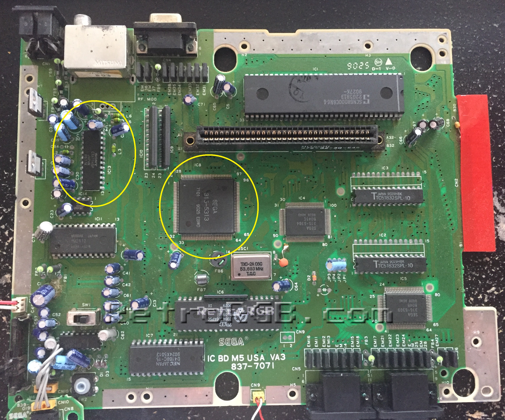

Sega Genesis HD Modifications

Not a lot of people know that the Sega Genesis can output RGB
natively. Here at Sinto we help your genesis to realize it's
fullest potential. By tapping the RGB Scart signal on the Genesis
and passing it on to component outputs. With this modification
your genesis will output a clean 320x224 progressive resolution.
You can Either send in your very own Sega Genesis or buy an already
modified system. We offer complete replacement warranties for all our hardware.
For more information on all the products we offer check out our
store page.